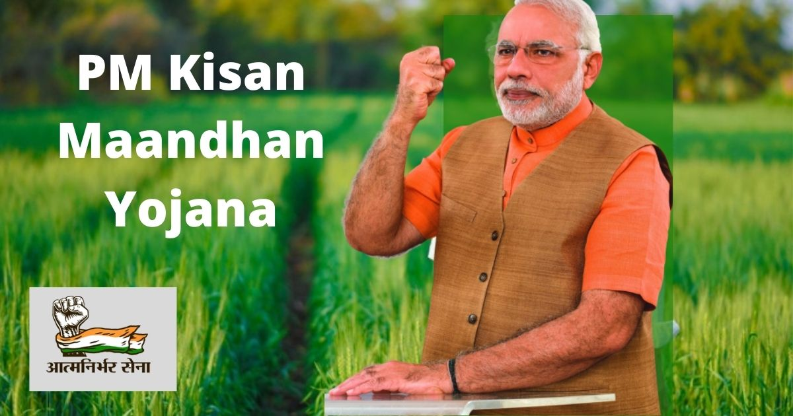

Pradhan Mantri Kisan Maan-Dhan Yojana (PM-KMY) is a pension scheme launched by the Government of India. It operated under the Ministry of Labor and Employment.
○ It aims to ensure that farmers have a continual source of income even when they are not able to work in fields
○ Eligible farmers will receive a pension of Rs. 3,000 per month after reaching 60 years old.
○ If the eligible farmer dies, the spouse is also eligible for a pension.
○ Applicable for small and marginal farmers with landholdings up to 2 hectares who are not enrolled in any other type of pension scheme.
○ This scheme is especially for farmers between the age of 18-40 years.